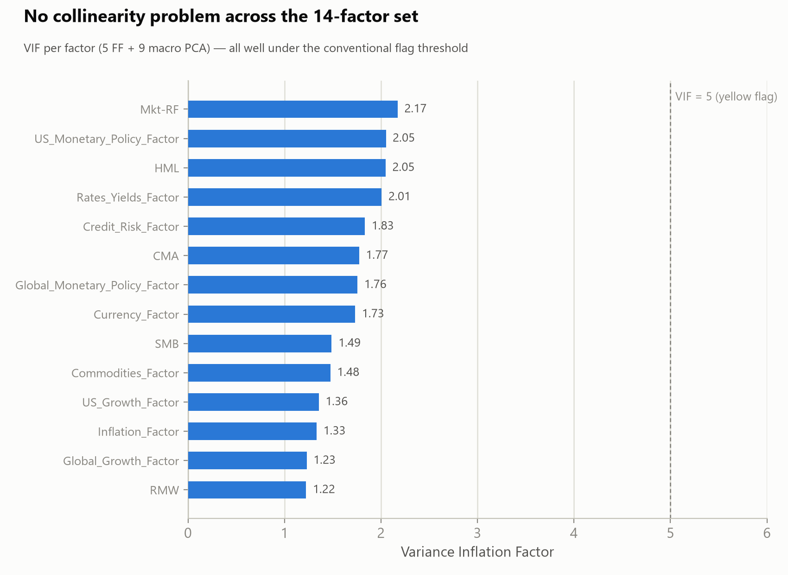
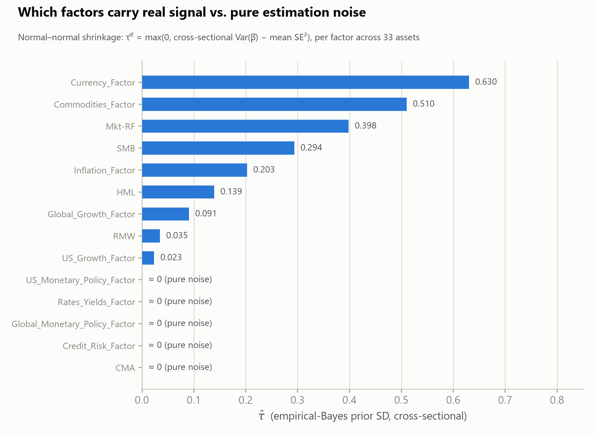
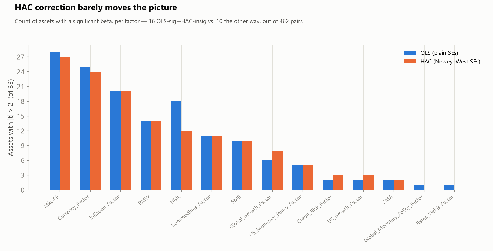
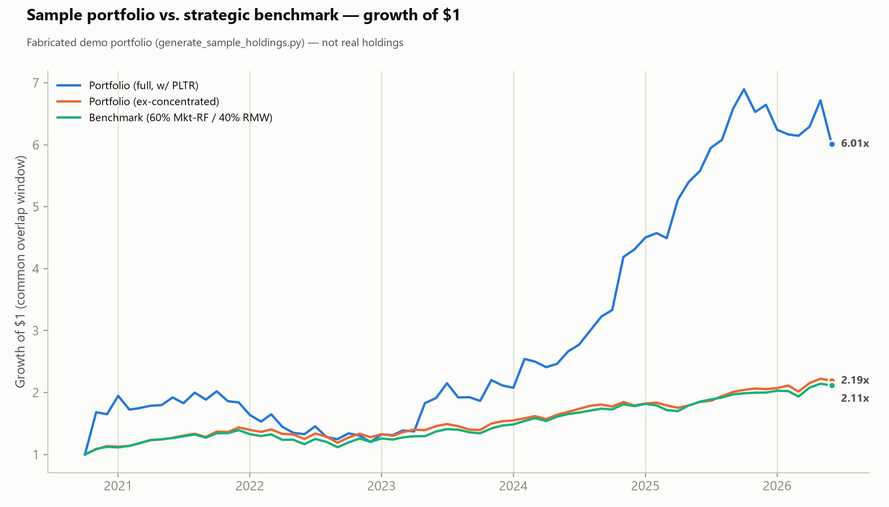
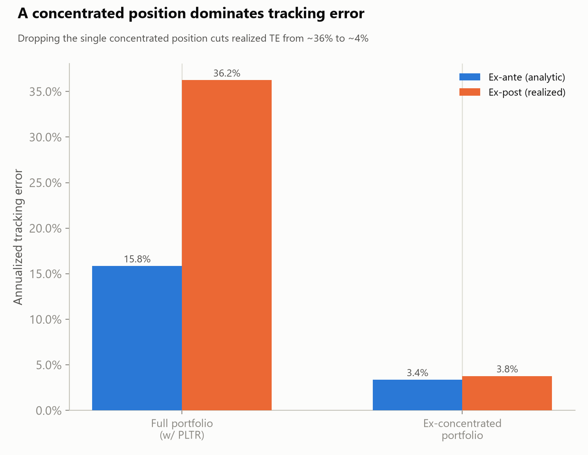

A macro-factor research pipeline (5 Fama-French + 9 macro PCA factors) and a factor-based
portfolio benchmarking pipeline, both run end-to-end on this repo's committed data. Charts below are read
straight off that data — nothing here is illustrative-only.
Portfolio data note: the portfolio charts below run on a fabricated demo portfolio
(generate_sample_holdings.py) — fake accounts, tickers, and dollar values, not real holdings —
exercised through the real benchmark/tracking-error pipeline so the numbers are internally consistent, just not real.
Factor diagnostics
From the 14-factor macro panel (python-projects/) — collinearity, and which factors carry real cross-sectional signal.

Variance Inflation Factor, all 14 factors
Highest VIF is 2.17 (Mkt-RF) — nowhere near the conventional 5–10 collinearity flag. Rules out shared-variance inflation as a cause of weak-looking betas elsewhere in the pipeline.

Empirical-Bayes τ̂ by factor
Cross-sectional dispersion in each factor's beta, net of estimation noise, pooled across 33 asset-class ETFs. Five factors (CMA, Credit_Risk, Rates_Yields, US/Global_Monetary_Policy) come back at τ̂≈0 — their observed spread is fully explained by noise, not real signal.

HAC vs. OLS significance counts
Newey–West correction for autocorrelation barely moves the picture (16 of 462 asset–factor pairs flip one way, 10 the other) — ruling out serial correlation as the source of the weak factors identified above.
Sample portfolio benchmark
From the demo tracking-error pipeline (portfolio-mgmt-demo/) — a fabricated portfolio against the constructed 60/40 Mkt-RF/RMW strategic benchmark.

Growth of $1 — sample portfolio vs. benchmark
The concentrated PLTR position drives the full portfolio far from both the benchmark and its own ex-concentrated version, which tracks the benchmark closely.

Tracking error: ex-ante vs. ex-post
Dropping the single concentrated position cuts realized tracking error from ~36% to ~4% — the regression-based ex-ante estimate (15.8%) undershoots the realized number for the full portfolio, since it only prices systematic FF5 exposure drift, not idiosyncratic single-stock risk.